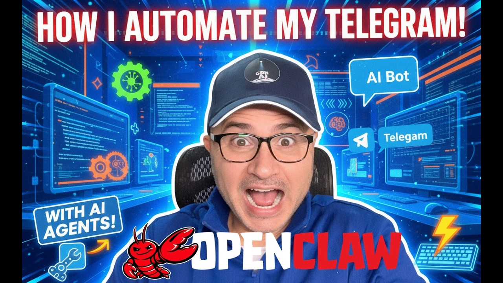

Leave it to Google to solve a hardware problem with software. The company just unveiled TurboQuant, an AI memory compression algorithm so efficient it makes you wonder why nobody thought of it sooner. We're talking about reducing the working memory requirements of large language models by at least six times—without sacrificing an iota of accuracy.
In an industry where GPU memory has become the primary bottleneck for AI deployment, this is the kind of breakthrough that changes the economics of the entire field. Suddenly, models that required enterprise-grade hardware might run on consumer devices. Training costs that were ballooning out of control could come back to earth.
The Memory Problem Nobody Talks About
Here's the dirty secret of the AI boom: we've been hitting a memory wall. Training and running large language models requires staggering amounts of RAM. GPT-4 class models need hundreds of gigabytes just to load into memory. Fine-tuning requires even more. The result has been a brutal arms race for GPU memory that has sent hardware costs soaring and concentrated AI capabilities in the hands of those who can afford the infrastructure.
This memory crunch has had real consequences. Smaller AI labs have been squeezed out. Research directions have been constrained by what fits in memory. Deployment has been limited to cloud environments because consumer hardware simply couldn't handle the load.
Google's TurboQuant attacks this problem head-on. By applying novel quantization techniques—compressing the numerical precision of model weights without degrading performance—the algorithm achieves compression ratios that were previously thought impossible.
How TurboQuant Works (Without the Math)
At its core, TurboQuant is a quantization algorithm. It reduces the precision of the numbers that represent neural network weights—from 32-bit floating point down to 4-bit or even lower representations. The trick is doing this without the accuracy degradation that usually accompanies aggressive quantization.

Traditional quantization methods treat all parts of a neural network equally. TurboQuant is smarter. It identifies which weights are most sensitive to precision loss and protects them, while aggressively compressing the parts that can tolerate it. The result is a 6x memory reduction with what Google claims is "indistinguishable" performance on standard benchmarks.
The algorithm also introduces dynamic precision adjustment—allocating more bits to active computation paths while keeping inactive weights in highly compressed forms. This is particularly valuable for inference, where only a portion of the model is active at any given time.
Implications for the AI Industry
If TurboQuant delivers on its promises, the implications are profound. Let's count the ways this changes the game:
Democratization of AI: Models that previously required A100 GPUs with 80GB of memory might now run on consumer RTX 4090s with 24GB. This opens up AI development to individuals and small teams who were previously priced out.
Edge deployment: Running large models on smartphones, laptops, and IoT devices becomes feasible. The privacy and latency benefits of local inference suddenly become accessible at scale.
Training cost reduction: Less memory per model means more models per GPU cluster. Training runs that previously required massive distributed setups might fit on single machines.
Research acceleration: Researchers can experiment with larger models, longer contexts, and more complex architectures without waiting for hardware upgrades.
The Competitive Angle
Google isn't developing TurboQuant out of the goodness of its heart. This is a competitive weapon in the AI wars. While OpenAI has captured the public imagination with ChatGPT, Google has been quietly building infrastructure advantages that could prove decisive in the long run.
TurboQuant fits into a broader pattern. Google's TPU chips offer better price-performance than NVIDIA GPUs for many AI workloads. Their Gemini models are increasingly competitive with GPT-4. And now they have a compression technology that could make their infrastructure significantly more efficient than competitors'.
The timing is also strategic. The AI industry is facing a GPU shortage that has slowed deployment and increased costs. An algorithm that reduces memory requirements by 6x is equivalent to finding a 6x increase in GPU supply. That's the kind of leverage that wins markets.
The Skeptic's View
Before we declare the memory crisis solved, some caveats are in order. Google's claims haven't been independently verified. The "indistinguishable performance" assertion needs to be tested across diverse tasks and model architectures. Previous quantization methods have often worked well on benchmarks but failed in real-world applications.
There's also the question of computational overhead. Aggressive compression usually requires decompression during inference, which can introduce latency. If TurboQuant requires complex decompression operations, the memory savings might come at the cost of slower inference speeds.
Finally, there's the proprietary nature of the technology. Google has a history of developing impressive technologies and then keeping them exclusive to their own products and cloud platform. If TurboQuant remains a Google-only advantage, it helps the company compete but doesn't solve the industry's broader memory problems.
What Happens Next
Google has indicated that TurboQuant will be integrated into their Vertex AI platform and made available to cloud customers. Whether the technology will be open-sourced or licensed to other AI labs remains unclear.
The industry will be watching closely. If independent researchers can replicate Google's results, expect a wave of follow-on innovations as the entire field adapts to a new memory-efficient paradigm. If the claims don't hold up, it will be another example of AI hype outpacing reality.
For now, TurboQuant represents exactly the kind of software innovation that the AI industry needs. Not another massive model trained on more data, but a fundamental improvement in how we use the models we already have. In a field obsessed with scale, sometimes the smartest move is to get more efficient.